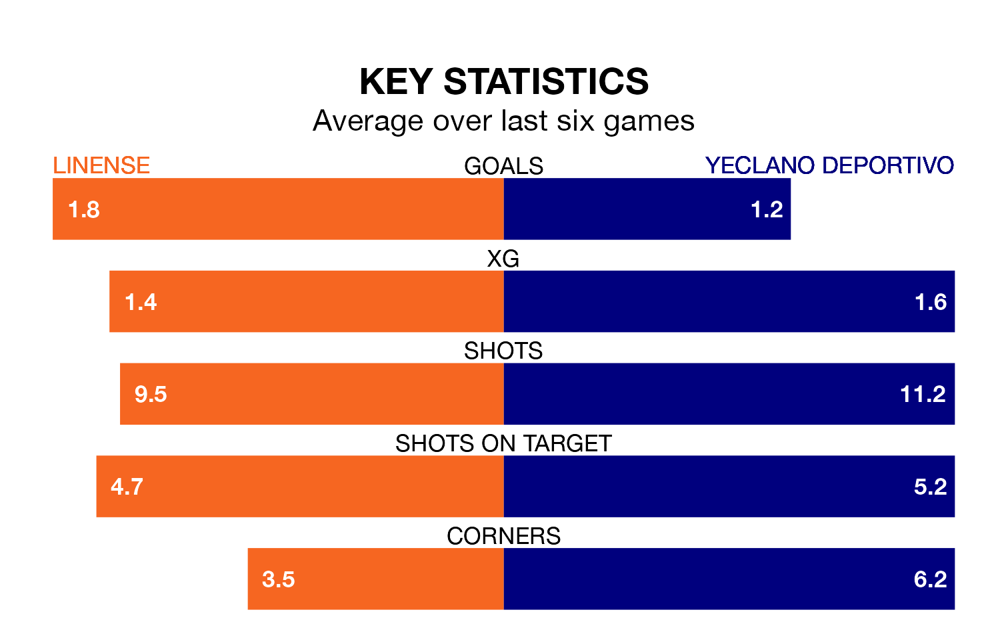

Yeclano Deportivo visit Linense at Estadio Municipal de La Línea de la Concepción on Sunday on the back of five consecutive wins in Segunda División RFEF Group 4.
Yeclano Deportivo have picked up 16 points from their last six games, and they face a Linense side who lost their last match, and have collected 12 points from the last possible 18.
Yeclano Deportivo are top of the table after 19 games, of which they have won 12 and drawn four, earning 40 points.
Linense are six places behind the away team in seventh, with eight wins and five draws putting them on 29 points.
With 25 goals in 19 games so far this season, Yeclano Deportivo are the league's third-highest scorers with 1.3 goals per game. And they are conceding fewer than average, letting in 15 goals at a rate of 0.8 per game.
The hosts are also above average scorers, with 1.1 goals per game, compared to a league average of 1.0. They have conceded 0.9 goals per game.
Linense's last match was on January 21, a 1-0 loss against Real Betis B.
Yeclano Deportivo beat Cádiz B 1-0 last time out, also on Sunday.
Updated: 08:51 (UTC), 25/01/24